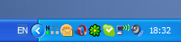

RBTray 3.4
Distributed under the terms of GNU General Public License
Copyright (C) 1999-2008 by Nikolay Redko
Allows you to minimize windows in the tray area on
taskbar by clicking right mouse button on the window's
minimize/close box or from system menu or from window's system menu, or by Win-T hotkey.
Allows to set any window in "Always on top" state from window's system menu.
- ver. 3.4: Optional Keyboard indicator (NumLock, CapsLock, ScrollLock status)

- ver. 3.3: Minor fix with hiding taskbar by Win-T if start menu is open.
(Win, Win-T - hides taskbar)
- ver. 3.2: Minor fix with pop-up menu for cases when taskbar is placed on any side of the screen, except of bottom.
- ver. 3.1: Global system hotkey: Win-T will minimize current window to tray area.
- ver. 3.0: changes by JD P (http://ww.moitah.net/)
- The previous version restores an application when it
detects a mouse-down on the tray icon, but then the
tray icon is removed and the mouse-up goes to a
different icon. It now restores an application only
after detecting a mouse-down and a mouse-up.
- Added a feature to restore icons owned by RBTray
after Explorer crashes and restarts.
- ver. 2.9: fixed bug with Windows XP keyboard switcher (Language Panel)
You can download tool, look at source, create feature/support request, etc,
from RBTray Project Page at SourceFORGE.net